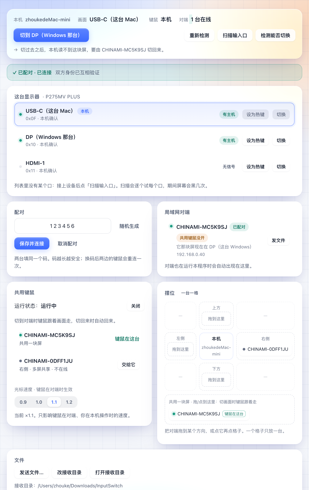
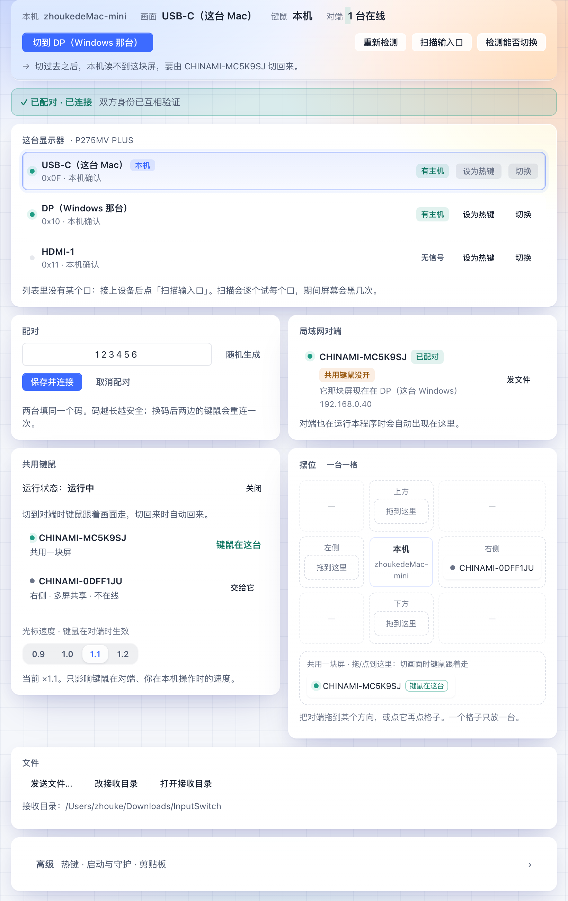
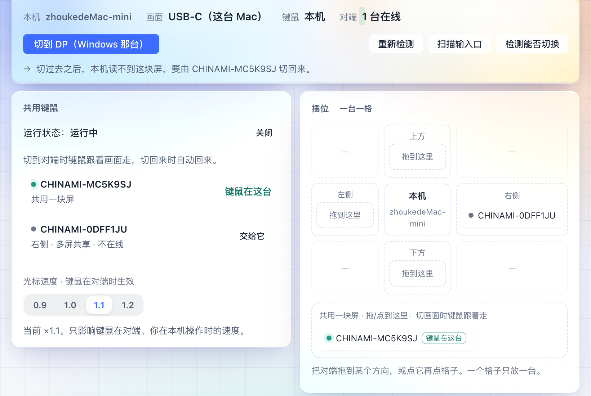

只改样式，不碰任何功能、文案、接口。两版都是同一份 panel.html 加同一份假数据渲染的，
下半页可以直接滚动、鼠标悬停测试。



| 位置 | 改前 | 改后 |
|---|---|---|
| 顶栏 | 跟随页面滚动，出了视口就没了 | position: sticky，常驻顶部；底边加一条 1px 分隔线，滚动时和内容分开 |
| 滚动条 | WebKit 默认细条，一直挂着 | 隐藏，跟随 macOS 的 overlay 滚动条习惯 |
| 列表行悬停 | 口行 / 对端行 / 链路行都 translateY(-1px) + 投影 | 只换行底色（淡蓝），不位移、不加投影 |
| 按钮 | 36 / 32 / 26px，渐变填充 + 蓝色光晕投影，按下有缩放 | 28 / 26 / 22px，平涂，只留 1px 内高光，按下不缩放 |
| 圆角 | 卡片 18px、输入框 11px、按钮 10px | 卡片 12px、输入框 / 按钮 6px，徽标 5px |
| 字号与间距 | 正文 14px，卡片内边距 18px，间距 14px | 正文 13px，内边距 14px，间距 12px |
| 页面宽度 | 内容限宽 880px 居中，两侧留白（像博客） | 铺满窗口，左右 16px（像应用窗口） |